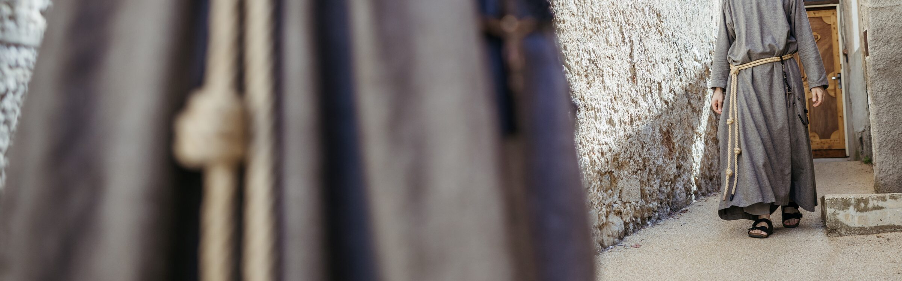
La vie des frères
La vie des frères
Une fraternité qui prie, travaille et sert
Prière et apostolat, silence et vie fraternelle : ainsi s'écoule le quotidien des frères franciscains de la Compassion.
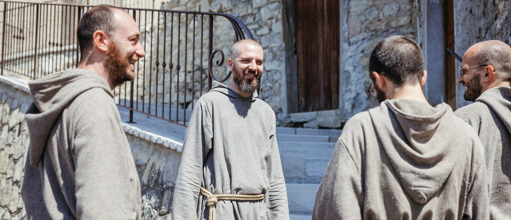
Le couvent, foyer de fraternité
Le couvent est le lieu où la vocation religieuse prend forme chaque jour.
Comme la maison pour une famille, au couvent les frères trouvent une nouvelle famille, de nouveaux frères avec qui l'on partage : la prière, les repas, le travail, la foi.
Horaire conventuel
- 05h25
- Office des Lectures
- 05h45
- Oraison mentale
- 06h15
- Laudes
- 07h00
- Sainte Messe et Chapelet des 7 Douleurs
- 08h00
- Petit-déjeuner
- 12h00
- Angélus (ou Regina Cæli)
- 12h45
- Sexte
- 13h00
- Déjeuner
- 14h00
- Repos
- 15h10
- Adoration et Vêpres
- 18h40
- Oraison mentale et Chapelet
- 19h40
- Dîner et récréation
- 20h45
- Complies et silentium magnum
- 21h45
- Extinction des lumières
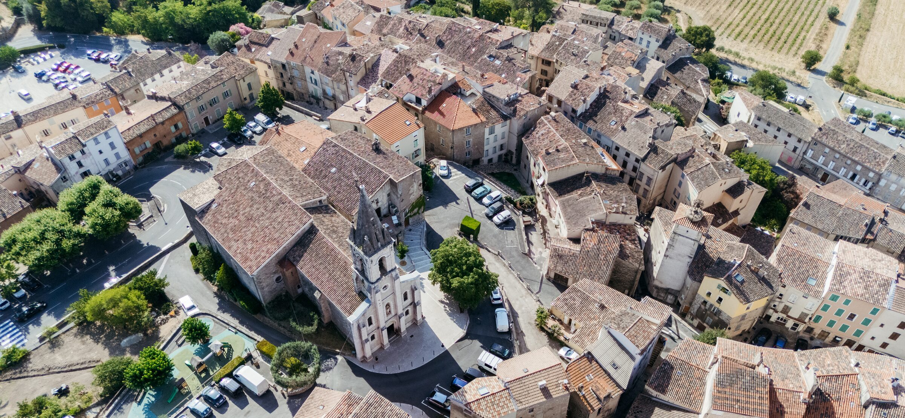
La chapelle
La chapelle : le cœur battant
La chapelle est le cœur battant de la vie fraternelle. Dans le tabernacle habite Notre Seigneur Jésus-Christ présent dans l'Eucharistie, notre roc, source quotidienne de force et de soutien : « La pluie est tombée, les torrents sont venus, les vents ont soufflé et se sont déchaînés contre cette maison ; et elle n'est pas tombée, parce qu'elle était fondée sur le roc » (Mt 7, 25).
Chaque matin, les frères se retrouvent pour l'Office et la méditation, lisant et priant, en dialogue avec Dieu. La Sainte Messe quotidienne, ouverte à tous, est le moment le plus élevé de communion avec le Seigneur, avec l'Église et avec les frères.
Aussitôt après la Messe, chaque matin, ils récitent le Chapelet des Sept Douleurs, pour former leur cœur à la compassion.
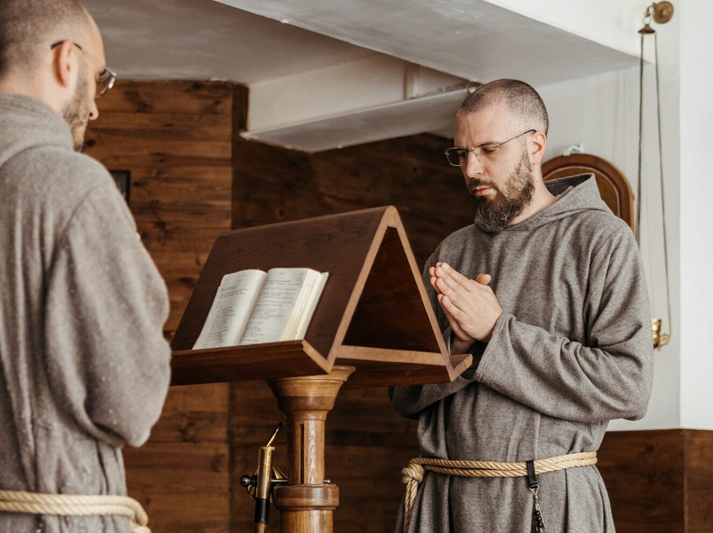
Ils étaient assidus à l'enseignement des apôtres et à l'union fraternelle, à la fraction du pain et aux prières.
— Ac 2, 42L'après-midi, les frères reviennent à la chapelle pour les Vêpres devant le Saint-Sacrement exposé. L'Eucharistie donne sa forme à la journée.
Chaque jeudi, ils se consacrent à l'adoration du Saint-Sacrement, priant en particulier pour les jeunes, pour les vocations religieuses et sacerdotales. Chaque vendredi, les frères font ensemble le Chemin de Croix, avec la bénédiction de la relique de la Sainte Croix.
La journée se termine par les Complies et le journal du soir : le père gardien lit aux frères un épisode ou une petite fleur des saints, afin que ces bons et héroïques exemples soient gardés et imités par les frères.
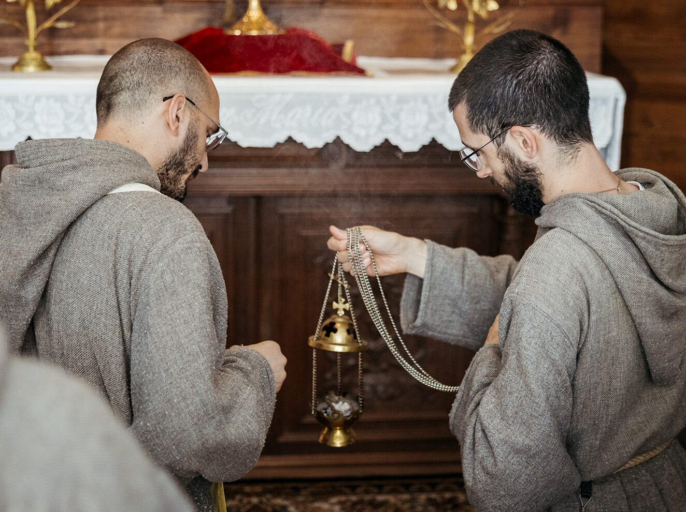
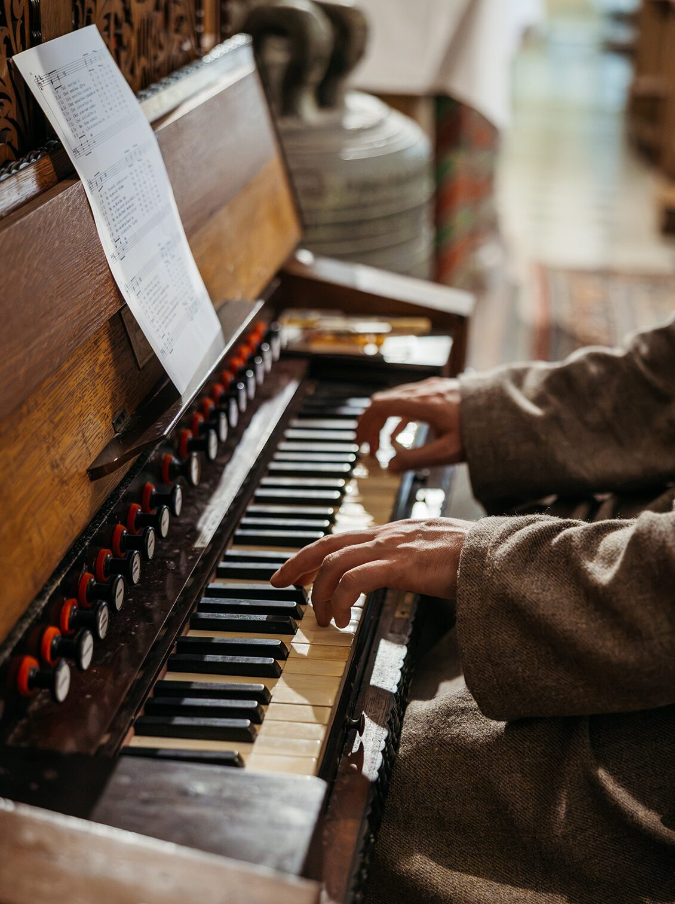
Le réfectoire
Le réfectoire : fraternité concrète
À table, les frères se retrouvent comme en famille. Les repas sont simples, préparés à tour de rôle par l'un des frères.
Le petit-déjeuner — sauf les dimanches et jours de fête — se prend en silence : on écoute des textes spirituels ou des vies de saints. Le déjeuner et le dîner sont au contraire des moments de dialogue et de joie franciscaine, où partager les joies et les difficultés de la journée.
Qu'il est bon, qu'il est doux pour des frères de vivre ensemble.
— Ps 132, 1
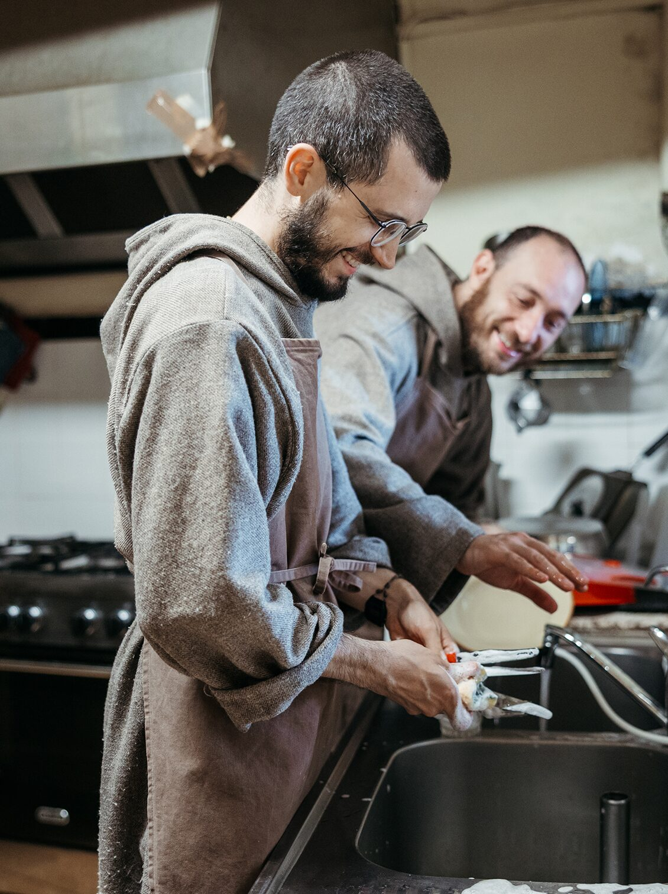
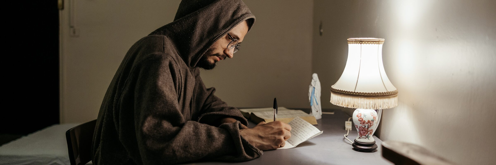
La cellule
La cellule et le silence
La cellule est le lieu privilégié de la rencontre personnelle avec le Christ. Les frères y cultivent la prière personnelle, l'étude et le repos, retrouvant dans le silence et la solitude la possibilité d'écouter Dieu, de grandir intérieurement et de préparer leur cœur à servir les autres avec plus de dévouement.
Quand tu pries, entre dans ta chambre et, la porte fermée, prie ton Père qui est là dans le secret ; et ton Père, qui voit dans le secret, te le rendra.
— Mt 6, 6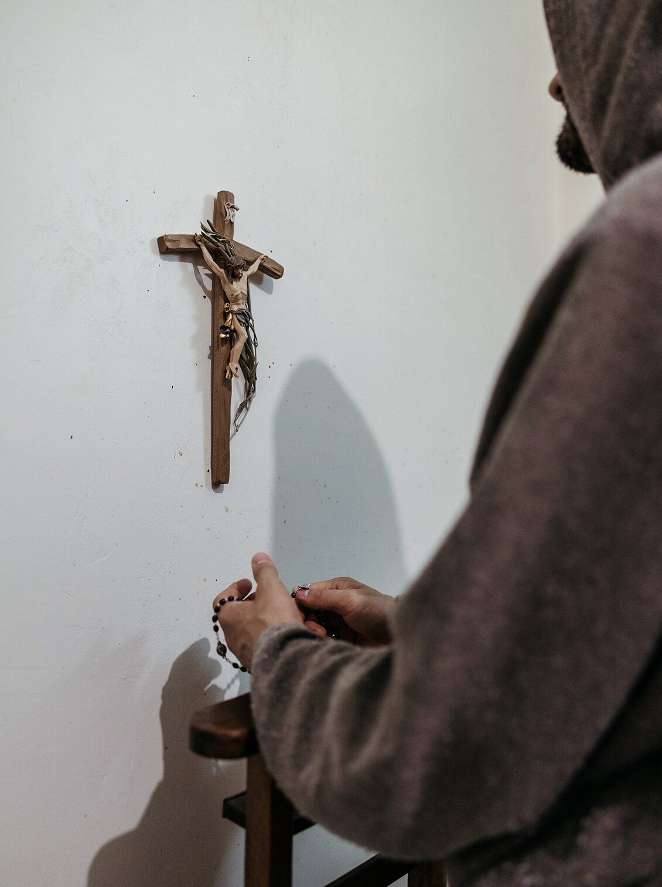
La providence
Pauvreté et Providence
Chaque jour, les frères font l'expérience de la générosité de nombreux bienfaiteurs qui les soutiennent dans leurs besoins : certains par des biens de première nécessité, d'autres par leur temps ou leurs compétences. La communauté prie pour ses bienfaiteurs à la fin des Laudes et des Vêpres, et après les repas.
Les frères ont une dévotion particulière à saint Joseph, modèle de Providence. Comme le disait sainte Thérèse d'Avila : « Je ne me souviens pas, jusqu'à ce jour, de l'avoir jamais prié sans avoir aussitôt obtenu la grâce ». Ainsi apprennent-ils chaque jour à s'abandonner entre les mains de Dieu, vivant avec liberté et joie le choix radical de la pauvreté.
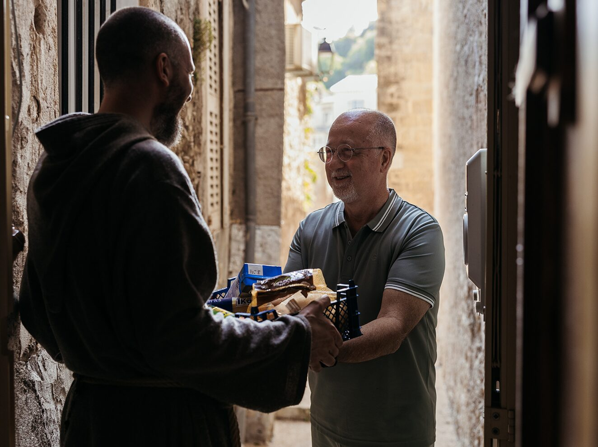
Cherchez d'abord le Royaume de Dieu et sa justice, et tout cela vous sera donné par surcroît.
— Mt 6, 33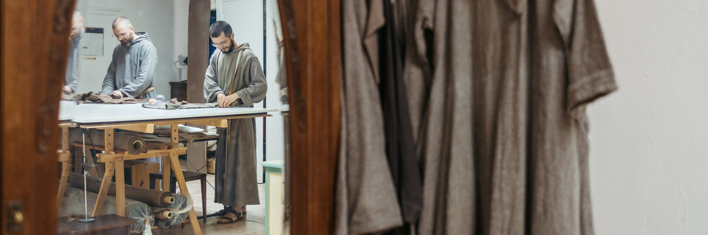
Vers le monde
L'apostolat
Peu après sa conversion, saint François eut un grand doute : « Frères, qu'est-ce qui est le plus louable : me consacrer à l'oraison ou aller prêcher ? » Guidé par l'inspiration divine, il comprit que son appel était de gagner les âmes au Christ en prêchant le saint Évangile, et il se mit aussitôt en chemin pour accomplir la volonté de Dieu.
Les frères vivent eux aussi cette même tension entre contemplation et action, entre le silence de l'oraison et l'apostolat vers le monde.
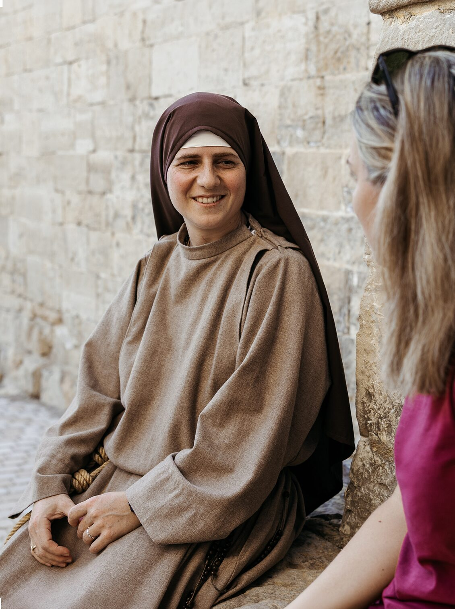
Le Règlement de vie de la communauté s'exprime ainsi :
« La compassion vécue dans la prière se manifeste naturellement dans le service concret des autres. Animés par l'amour du Christ crucifié et de la Vierge des Douleurs, qui se donnent entièrement par amour de Dieu et des âmes, les frères incarnent leur don de soi à travers la présence, l'écoute et le soutien offerts à ceux qui souffrent, ainsi que dans l'annonce de l'Évangile de la miséricorde » (Règlement de vie 2.3).
Cette mission prend une forme concrète de différentes manières, selon les possibilités de chaque communauté : retraites spirituelles, journées de formation, week-ends vocationnels et camps d'été pour les jeunes ; et, là où la réalité pastorale le permet, un soutien direct aux plus nécessiteux à travers des structures d'accueil et d'assistance (cf. Règlement de vie 3.1.2).
Je conseille, j'avertis et j'exhorte mes frères dans le Seigneur Jésus-Christ, quand ils vont par le monde, à être doux, pacifiques et modestes, humbles et bienveillants, parlant honnêtement à tous, comme il convient.
— Saint François, Règle bullée, 3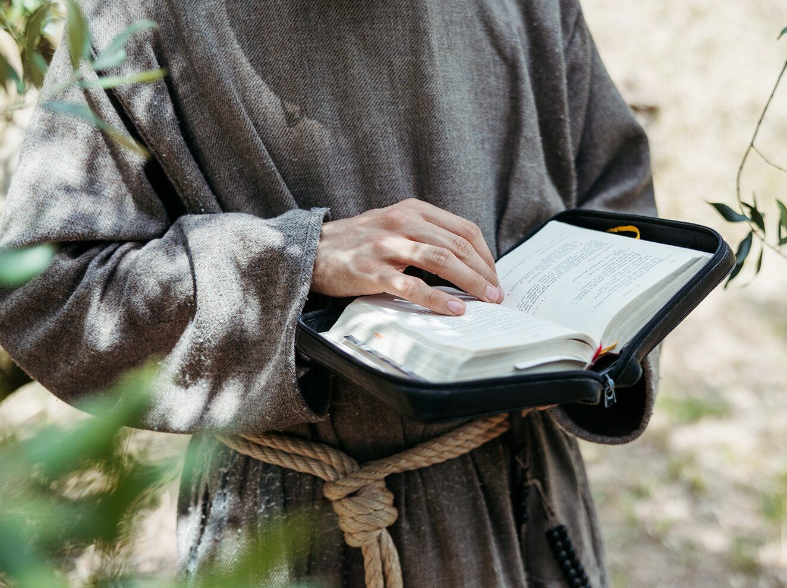
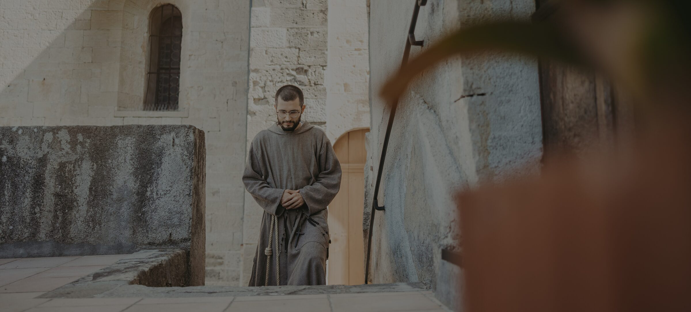
« Quiconque aura quitté sa maison, ou ses frères, ou ses sœurs, ou son père, ou sa mère, ou ses enfants, ou ses champs, à cause de mon nom, recevra le centuple et aura la vie éternelle en héritage. »— Saint François
Veux-tu rejoindre cette mission ?
Si tu te sens attiré par cette vie franciscaine de compassion et de communion, tu peux vivre une période avec les frères, participer à une retraite, vivre des moments de silence et de prière en communauté.
Soutenez les frères et leur apostolat.
Votre contribution permettra à la communauté de vivre concrètement la compassion et la communion de l'Évangile.
SOUTENEZ-NOUS